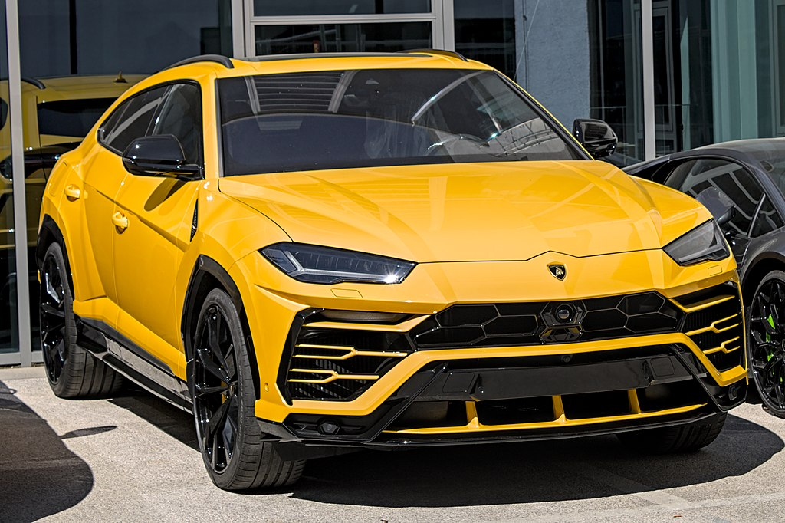

sayt yangi dasturchi tomonidan tayyorlangan xatoliklar uchun uzur so'raymiz bu saytda mashinalar haqida o'rganamiz
Lamborghini SpA — eng mashhur italyan avtomobil ishlab chiqaruvchilaridan biri hisoblanadi. Uning bosh qarorgohi SantAgata Bolonez shahrida joylashgan. U qimmat va hashamatli avtomobillardan tashqari sport avtomobillar ishlab chiqarish bilan ham shugullanadi. Kompaniya uzining shuba korxonasi Audi orqali Volkswagen guruhiga tegishli.
Italiyalik ishlab chiqaruvchi Ferruccio Lamborghini 1963-yilda Ferrari bilan raqobatlashish uchun Automobili Ferruccio Lamborghini SpA kompaniyasiga asos solgan. Lamborghini ozining birinchi on yilligida tez osdi, ammo 1973-yilgi jahon moliyaviy inqirozi va neft inqirozi ortidan sotuvlar pasayib ketdi. Firma egaligi 1973-yildan keyin uch marta ozgardi, shu jumladan 1978-yilda bankrot boldi. American Chrysler Corporation1987-yilda Lamborghini boshqaruvini oz qoliga oldi va uni Malayziyaning Mycom Setdco investitsiya guruhiga va 1994-yilda Indoneziyaning VPower Corporation guruhiga sotdi. 1998-yilda Mycom Setdco va VPower Lamborghini-ni Volkswagen guruhiga sotdi
Lamborghini hozirda V12 dvigatelli Aventador va V10 dvigatelli Huracán hamda ikki turbo V8 dvigatel bilan jihozlangan Urus SUV avtomobillarini ishlab chiqaradi. Bundan tashqari, kompaniya offshor motorli qayiq poygalari uchun V12 dvigatellarini ishlab chiqaradi. 1948-yilda Ferruccio Lamborghini tomonidan asos solingan Lamborghini Trattori kompaniyasining bosh qarorgohi Italiyaning Pieve di Sento shahrida joylashgan va traktorlar ishlab chiqarishni davom ettirmoqda
Kompaniyani italiyalik Ferruccio Lamborghini 1963-yilda Ferrari kabi taniqli brendlar takliflari bilan raqobatlasha oladigan sayyohlik avtomobillarini ishlab chiqarish maqsadida asos solgan. Kompaniyaning 350 GT kabi birinchi modellari 1960-yillarning ortalarida chiqarilgan. Lamborghini 1966-yilgi Miura sport kupesi uchun etiborga sazovor boldi, u orqa dvigatelli, orqa gildirakli haydovchi sxemasidan foydalangan. Lamborghini ozining birinchi on yilida tez osdi, ammo 1973-yilgi global moliyaviy inqiroz va neft inqirozi ortidan sotuvlar pasaydi. Ferruccio Lamborghini kompaniyani Georges-Henri Rossetti va Rene Leimerga sotdi va 1974-yilda nafaqaga chiqdi. Kompaniya 1978-yilda bankrot boldi va 1980-yilda aka-uka Jan-Klod va Patrik Mimranlarning qabulxonasiga otkazildi. Mimranlar kompaniyani qabul qilish huquqidan tashqarida sotib oldilar. 1984-yilga kelib uning kengayishiga katta sarmoya kiritdi. Mimrans boshqaruvi ostida Lamborghini modellari qatori Countachdan Jalpa sportkari va LM002 yuqori unumdor yoʻltanlamas avtomobilini oʻz ichiga olgan holda kengaytirildi. Mimranlar Lamborghini-ni 1987-yilda Chrysler korporatsiyasiga sotdilar. Chrysler Lamborghini-ni Malayziyaning Mycom Setdco investitsiya guruhiga va Indoneziyaning VPower Corporation guruhiga, 1999-yilda Mycomco korporatsiyasiga sotdi. va VPower Lamborghini-ni Volkswagen guruhiga sotdi, u yerda u guruhning Audi bolinmasi nazorati ostida edi. Brend portfeliga yangi mahsulotlar va model liniyalari kiritildi va bozorga olib kirildi. 2000-yillarning oxirlarida, butun jahon moliyaviy inqirozi davridava keyingi iqtisodiy inqiroz, Lamborghini sotuvi deyarli 50 foizga qisqardi. 2021-yilda Lamborghini bosh direktori 2024-yilga kelib uning barcha modellari gibrid bolishini aytdi
2018-yilda Lamborghini avtomobillari assortimenti uchta model qatoridan iborat boʻlib, ulardan ikkitasi oʻrta dvigatelli ikki oʻrindiqli sport avtomobillari, uchinchisi esa old dvigatelli, toʻliq gʻildirakli SUV
Hozirgi V12 quvvatli Aventador ishlab chiqarish liniyasi LP 740-4 Aventador Ultimate, SVJ kupelari va yoʻltanlamaslaridan iborat boʻlib, barcha Aventador modellarini ishlab chiqarish 2022-yilda yakunlanishi aytilmoqda
.jpg)
V10 dvigatelli Huracan liniyasi hozirda toʻliq gʻildirakli LP 610-4 kupesi va Spyder, arzon narxlardagi orqa gʻildirakli LP 580-2 kupesi va Spyder hamda eng kuchli trekka yoʻnaltirilgan LP 640-4 Performanté kupesini oʻz ichiga oladi

2019-yilga kelib savdo hajmini ikki baravar oshirish niyatida, Lamborghini oʻz qatoriga ikki turboli V8 dvigateli bilan jihozlangan va old dvigateli, toʻliq gʻildirakli haydovchi sxemasidan foydalanadigan Urus nomli SUVni ham qoʻshdi
Motori Marini Lamborghini World Offshore Series 1-sinf motorli qayiqlarida foydalanish uchun katta V12 dengiz dvigatel blokini ishlab chiqaradi. Lamborghini markali dengiz dvigateli taxminan 8,171 kubometr (8,2 L) sigʻimga ega va taxminan 940 ot kuchiga ega
Raqibi Enzo Ferrari dan farqli oʻlaroq, Ferruccio Lamborghini zavod tomonidan qoʻllab-quvvatlanadigan Lamborghini poygalari boʻlmasligiga qaror qilgan edi, chunki avtosport juda qimmat va kompaniya resurslarini sarflaydi. Bu oʻsha vaqt uchun gʻayrioddiy edi, chunki koʻplab sport avtomobil ishlab chiqaruvchilari avtosportda ishtirok etish orqali tezlik, ishonchlilik va texnik ustunlikni namoyish etishga intilishdi. Ayniqsa, Enzo Ferrari oʻzining avtomashina biznesini asosan avtopoygalardagi ishtiroki uchun mablagʻ manbai deb bilishi bilan mashhur edi. Ferruchcho siyosati, u va uning muhandislari oʻrtasida keskinlikni keltirib chiqardi, ularning koʻpchiligi poyga ishqibozlari edi, baʼzilari avval Ferrarida ishlagan. Dallara, Stanzani va Uolles boʻsh vaqtlarini P400 prototipini ishlab chiqishga bagʻishlashni boshlaganlarida, ular uni poyga salohiyatiga ega, trekda gʻalaba qozonish va ishqibozlar tomonidan yoʻlda haydash mumkin boʻlgan yoʻl avtomobili qilib yaratdilar.1985-yilda Lamborghinining Britaniya importchisi Spice Engineering bilan birgalikda Countach QVX ni 1986-yilgi C guruhi chempionat mavsumi uchun ishlab chiqdi. Bitta mashina ishlab chiqarilgan, ammo homiylik yoʻqligi mavsumni oʻtkazib yuborishiga sabab boʻlgan. QVX faqat bitta poygada qatnashdi. 1986-yilda Janubiy Afrikaning Kyalami shahrida boʻlib oʻtgan chempionlik poygasida Tiff Needell boshqargan.Lamborghini 1989-yildan 1993-yilgacha Formula 1 mavsumida dvigatel yetkazib beruvchi boʻlgan. U Laroussega (1989-1990, 1992-1993), Lotus (1990), Ligier (1991), Minardi (1992) va 1991-yillarda Modenaga dvigatel yetkazib bergan. 1992-yilgi Larrousse-Lamborghini asosan raqobatbardosh boʻlmagan, ammo egzoz tizimidan yogʻni chiqarish tendentsiyasida eʼtiborga loyiq edi. Larrousse orqasida yaqindan ergashib kelayotgan mashinalar odatda poyga oxirida sargʻish-jigarrang rangga ega boʻlib qolgan[12]. Lamborghini eng yaxshi natijaga Larousse bilan 1990-yilda Yaponiya Gran-prisida erishgan, oʻshanda Aguri Suzuki oʻz maydonida uchinchi oʻrinni egallagandi. 1991-yil oxirida Konrad KM-011 Group C sport avtomobilida Lamborghini Formula 1 motori ishlatilgan, biroq loyiha bekor qilinguncha mashina bir necha poyga davom etgan xolos. Lamborghinining oʻsha paytdagi bosh kompaniyasi boʻlgan Chrysler nomi bilan qayta nishonlangan xuddi shu dvigatel McLaren tomonidan 1993-yilgi mavsum oxirida sinovdan oʻtkazildi va undan 1994-yilgi mavsumda foydalangan. Maʼlumotlarga koʻra, haydovchi Ayrton Senna dvigatelning ishlashidan hayratda qolgan boʻlsa-da, McLaren muzokaralardan voz kechib, oʻrniga Peugeot dvigatelini tanladi va Chrysler loyihani yakunladi.
Buqalar jangi dunyosi Lamborghini shaxsiyatining asosiy qismidir. 1962-yilda Ferruccio Lamborghini ispan jangchi buqalarining mashhur naslchisi Don Eduardo Miuraning Sevilya fermasiga tashrif buyurdi. Lamborghini, Torosning oʻzi, ulugʻvor Miura hayvonlaridan shunchalik hayratda ediki, u tez orada ochiladigan avtomobil ishlab chiqaruvchisi uchun gʻazablangan buqani timsol sifatida qabul qilishga qaror qildi
Oʻzining butun tarixi davomida Lamborghini 1963-yilda Lamborghinining birinchi prototipi 350GTV dan boshlab turli xil kontseptual avtomobillarni taqdim etgan. Boshqa mashhur modellar qatoriga Bertonning 1967-yilgi Marzal , 1974-yilgi Bravo va 1980-yilgi Athon , Chryslerning 1987-yilgi Portofino, 1995-yildagi Italdesign uslubidagi Cala , 1996 -yildagi Zagato tomonidan ishlab chiqarilgan Raptor kiradi. 2008 -yilgi Parij avtosalonida Lamborghini toʻrt eshikli Sedan konsepti Estoqueni namoyish etdi. Estoquening yakuniy ishlab chiqarilishi haqida koʻp mish-mishlar boʻlgan boʻlsa-da[16], Lamborghini rahbariyati SantʼAgata zavodidan chiqarilgan birinchi toʻrt eshikli avtomobilni ishlab chiqarish boʻyicha qaror qabul qilmadi[17][18]. 2010-yilgi Parij avtosalonida Lamborghini Sesto Elementoni taqdim etdi. Kontsept-kar deyarli butunlay uglerod tolasidan tayyorlangan boʻlib, u juda yengil, ogʻirligi 999 kg ni tashkil qiladi. Sesto Elemento Lamborghini Gallardoda topilgan bir xil V10 dvigateliga ega. 2012-yil Jeneva avtosalonida Lamborghini Aventador J ni taqdim etdi bu Lamborghini Aventadorning tomsiz, oynasiz versiyasi. Aventador J standart Aventador kabi 700 ot kuchiga ega dvigatel va yetti pogʻonali uzatmalar qutisidan foydalanadi. Lamborghini kompaniyasining 50 yilligini nishonlash doirasida Egoistani yaratdi. Egoista bir kishi uchun moʻljallangan va faqat bitta Egoista qilish kerak. 2014- yilgi Parij avtosalonida Lamborghini kompaniyasi Asterion LPI910-4 gibrid kontsept-karini taqdim etdi. Yunon afsonasidagi yarim odam, yarim buqa gibrid (Minotavr) nomi bilan atalgan. Bu kompaniya tarixidagi birinchi gibrid Lamborghini hisoblanadi. Huracanga 607 ot kuchiga ega 5,2 litrli V10 dvigateli oʻrnatigan. U 100 km/soat tezlikka 3 soniyadan sal koʻproq vaqt sarflaydi, maksimal tezligi esa 298 km/soat deb daʼvo qilingan.


Boloniyada ikkita muzey bor, Emilia-Romagna brendi atrofida joylashgan.
Ushbu ikki qavatli muzey shtab-kvartiraga biriktirilgan boʻlib, turli xil zamonaviy va vintage modellarini namoyish etuvchi Lamborghini avtomobillari va sport avtomobillari tarixini qamrab oladi. Muzey Lamborghini tarixini taqdim etish va muhim bosqichlarni koʻrib chiqish uchun avtomobillar, dvigatellar va fotosuratlar namoyishlardan foydalanilgan.
Ferruccio Lamborghini haqidagi 9000 kvadrat metrlik muzeyda bir nechta avtomobillar, sanoat prototiplari, eskizlari, shaxsiy buyumlari va Ferruchchoning erta hayotidagi oilaviy fotosuratlar mavjud
.jpg)
.jpg)